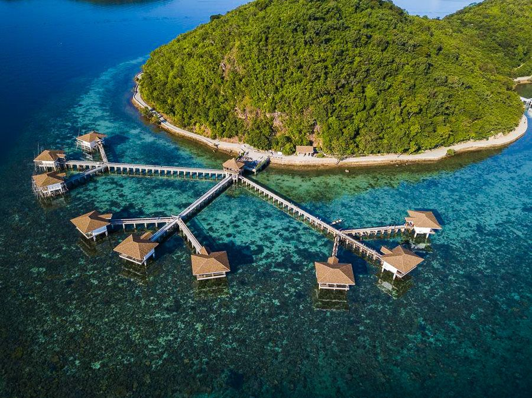
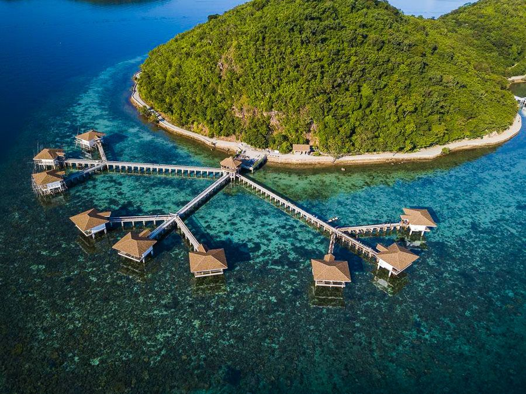

CORON ISLAND
Facts about Coron
Coron is the third-largest island in the Calamian Islands in northern Palawan in the Philippines. The island is part of the larger municipality of the same name. It is about 170 nautical miles (310 km) southwest of Manila and is known for several Japanese shipwrecks of World War II vintage. Because of its unique ecological features, the entire area is protected by several legal proclamations. The island and surrounding fishing grounds are part of the ancestral domain of the indigenous Tagbanwa people, officially designated such on June 5, 1998.[1] Known as Calis among the Tagbanwas and Coronians, its tribal chieftain is Rodolfo Aguilar I. The island comprises two barangays of the municipality of Coron: Banuang Daan and Cabugao
BANAUE RICE TERRACES
Facts about Banaue Rice Terraces
The famous Banaue Rice Terraces once were just winding fields that laid embracing a mountain side. Although the locals had totally abandoned this place, young farmers at the present day are reviving these plantations.
Supporting the survival needs of many Ifugao natives since pre-colonial times, this mud and stone terraced rice field was declared as a World Heritage Site by UNESCO in 1995. The unique technique of water harvesting from the mist-clad mountaintops showcase the brilliant engineering skills that have been passed on from generation to generation.
Location: Nueva Vizcaya - Ifugao - Mountain Province Rd, Banaue, Ifugao, Philippines
SIARGAO ISLAND
Facts about Siargao Island
Siargao is known to be one of the famous places in the Philippines for surfing. Even though the island is very small, almost like a teardrop, it’s one of the most visited places. The entire island is bordered with white sandy beaches while the turquoise blue water washes off the shoreline. Inland waterfalls and lagoons are also present, which are major relaxing and rejuvenating spots.
Besides, if you want to explore the inner lands of the island, you can go on cave trekking which is a popular activity in Siargao. Snorkelling and deep-sea diving are also quite famous for non-surfer tourists, especially since you will find coral reefs surrounding the island shoreline.
Location: Towards the Northeast coast of Mindanao, Philippines
HOKKAIDO
HOKKAIDO
Facts about Hokkaido
Located on Japan's northernmost island, Hokkaido, the city of Sapporo offers many things to do for tourists. As the island's largest city, it's a hub of cultural activity, hosting many excellent events and festivals. It also has a distinctive culinary style; a rich theatrical history; and plenty of museums, galleries, and parks.
The focal point here is very much the city's attractive downtown area, the center of which is Odori Park, a large swath of green that's very pleasant to explore. From here, you can also access points of interest such as the Sapporo TV Tower, as well as the city's famous aerial tramway, an easy walk away. The Mount Moiwa Ropeway will eventually get you to the summit's Upper Station, from where you can enjoy incredible views over the city, a real treat at night.
The mountain is also the location of the Mount Moiwa Ski Resort, a popular winter destination, especially since the 1972 Winter Olympics were held in the city. And if you're arriving in winter, be sure to visit the Sapporo Snow Festival, held here each February and drawing in excess of two million revelers.
Hokkaido is also a home to a variety of beautiful fall foliage spots. One of the most popular spots is Daisetsuzan National Park, which boasts a stunning array of colorful leaves.
You can take a cable car up to the top of the mountain to get a bird’s-eye view of the landscape.
Another must-visit spot is the Shiretoko Peninsula, where you can take a boat tour to see the colorful leaves and the local wildlife, including brown bears.
AUTUMN FESTIVALS IN HOKKAIDO One of the most famous festivals held in Hokkaido is the Sapporo Autumn Fest, which takes place in late September.
The festival features local food and drinks, as well as live music and entertainment.
Another popular festival is the Biei Autumn Fest, which takes place in early October. This festival is known for its beautiful flower fields and local food stalls.
MOUNT FUJI
Facts about Mount Fuji
Without a doubt Japan's most recognizable landmark, majestic Mount Fuji (Fuji-san) is also the country's highest mountain peak. Towering 3,776 meters over an otherwise largely flat landscape to the south and east, this majestic and fabled mountain is tall enough to be seen from Tokyo, more than 100 kilometers away.
Mount Fuji has for centuries been celebrated in art and literature and is now considered so important an icon that UNESCO recognized its world cultural significance in 2013. Part of the Fuji-Hakone-Izu National Park, Mount Fuji is climbed by more than a million people each summer as an act of pilgrimage, which culminates in watching the sunrise from its summit.
While some still choose to begin their climb from the base, the majority of climbers now start from above the halfway mark, at the 5th Station, resulting in a more manageable six-or-so-hour ascent. Those who do attempt the complete climb are advised to depart in the afternoon, breaking up the climb with an overnight stop at one of the "Mountain Huts" designed for this very purpose. An early start the next day gets you to the top for the sunrise.
Of course, for many, simply viewing the mountain from the distance, or from the comfort of a speeding train, is enough to say "been there, done that."
OSAKA CASLE
Facts about Osaka Casle
Built in 1586 by famous Japanese warrior and politician Toyotomi Hideyoshi, Osaka Castle (Ōsaka-jō) was at the time the largest and most important fortress in the country. Although destroyed and rebuilt a number of times since, the present structure, built in 1931, remains true to the original.
Highlights of a visit include the huge five-story, 42-meter-tall main tower. Built on an imposing 14-meter-tall stone base, the tower is home to a number of displays detailing the history of the castle and the city. Be sure to visit the top floor for its superb views over Osaka, an especially attractive sight as the sun sets.
Also of interest in Osaka Castle Park is the Hokoku Shrine, while Osaka's best-known temple, Shitennō-ji, is also worth visiting and dates back to AD 59. Notable as Japan's first Buddhist temple, this lovely shrine features a five-story pagoda along with a number of other exquisitely decorated buildings. Among them are the Golden Pavilion (Kondō), with its fine statues and paintings; the Lecture Hall (Kōdō); and a lovely covered corridor linking three of the site's gates.
HONG KONG DISNEYLAND
Facts about Disneyland
Hong Kong Disneyland is located on Lantau Island. Here, you'll find a wonderful world filled with fun and fantasy populated with the cast and characters from Disney movies. The park is divided into seven lands: Adventureland; Fantasyland; Toy Story Land; Tomorrowland; Grizzly Gulch; Mystic Point; and Main Street, U.S.A.
Performances happen throughout the day in the various lands and feature everything from parades to musicals, right through to evening fireworks over the castle. Also on offer are a wide array of adventures, ranging from Jungle cruises to a trip to Tarzan's Treehouse, as well as water-based fun at Liki Tiki.
The park undertook significant renovations and upgrades in late 2019. One of the major highlights of this revitalization was the construction of the Castle of Magical Dreams. Here, your children can gaze in awe at wonders like Cinderella's Coach, Snow White's apple and Belle's rose. The new castle will also be the venue for daytime and evening musical shows and extravaganzas.
The second major upgrade is the addition of the Frozen area and the installation of the brand new ride called Wandering Oaken's Sliding Sleigh, where Olaf and Sven pull your sleigh to the top of the hill and send you on your way. In addition to the ride, you'll be able to meet Elsa and wander through the kingdom of Arendelle.
You can easily reach Hong Kong Disneyland on the MTR Disneyland Line, Disneyland Station.
TEN THOUSAND BUDDHAS MONASTERY
Facts about Buddhas Monastery
Ten Thousand Buddhas Monastery, located in Sha Tin, offers a beautiful and peaceful escape from the bustle of central Hong Kong and a look at the countryside. Set on a hilltop, the main access to the monastery is reached by walking up a long and curving set of stairs (approximately 400 steps), lined with hundreds of golden statues.
The walk is part of the attraction, and each of the statues is unique, many with quirky facial expressions and other interesting characteristics. Once at the top, the path opens into the square in front of the main temple, a welcome sight both because it's the end of the climb and for the impressive structures and statues that surround the open space.
OCEAN PARK HONGKONG
Facts about Ocean Park in Hong Kong
The Ocean Park theme park has just opened the long-awaited Water World section. This year-round aquatic park has 27 indoor and outdoor water-based attractions. Park highlights include Torrential River, Cyclone Spin, Tropical Twist, Thunder Loop, and Vortex. All include an element of water that either loops you, spins you, or sends you careening into a black hole.
If those sound interesting but not overly frightening, perhaps a ride down the Daredevil Drop or a plunge off the Bravery Cliffs might do the trick. All that said, it's not all about thrills. More family-oriented options include water features for children and a large wave pool. For those truly looking to chill out (or recover from the adrenaline rush) cabana beds are also available.
Dining options are available throughout the park including take-out treats, sit-down restaurants, and halal-certified establishments.
Why not make a holiday of it? Water World even has its own luxury hotels: the brand-new 417-room Hong Kong Ocean Park Marriott and the 425-room Fullerton Ocean Park Hotel Hong Kong.